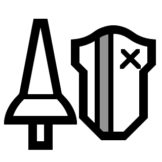

Featured Monsters


Top Weapons
| Icon | Weapon | Type | Element |
|---|---|---|---|
 |
Great Sword | Melee | None |
 |
Long Sword | Melee | Dragon |
 |
Sword and Shield | Melee | Poison |
 |
Dual Blades | Melee | Ice |
| Hammer | Melee | Stun | |
 |
Hunting Horn | Melee | Buffs |
|  | Lance | Melee | Water |
| Gunlance | Melee | Fire | |
 |
Switch Axe | Melee | Thunder |
 |
Charge Blade | Melee | Paralysis |
 |
Insect Glaive | Melee | Dragon |